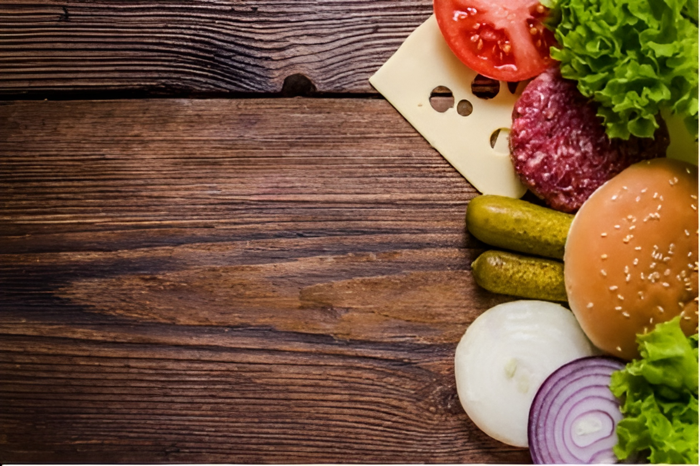

Cheese
Burger
"Cheeseburgers. An absolute summertime staple."

INGREDIENTS:-
| ½ cup mayonnaise |
| ¼ cup ketchup |
| 3 tablespoons dill pickle relish |
| 1 tablespoon Dijon mustard |
| 2 pounds ground beef, 80/20 |
| Kosher salt and freshly ground black pepper, to taste |
| 1 tablespoon canola oil |
| 6 slices American cheese |
Steps
- BURGER SAUCE: In a small bowl, whisk together
mayonnaise, ketchup, dill pickle relish and Dijon; set aside.
- in a large bowl, combine beef, 1 1/2 teaspoons salt and
1 1/2 teaspoons pepper. Using a wooden spoon or clean
hands, stir until well combined. Gently form into 6
1-inch-thick patties, about the size of the hamburger buns.
- Heat canola oil in a large cast iron skillet over medium high
heat. Add patties and cook until lightly charred or
until desired doneness, about 3-5 minutes per side; top with
cheese.
- Serve immediately in hamburger buns with BURGER SAUCE
and desired toppings.